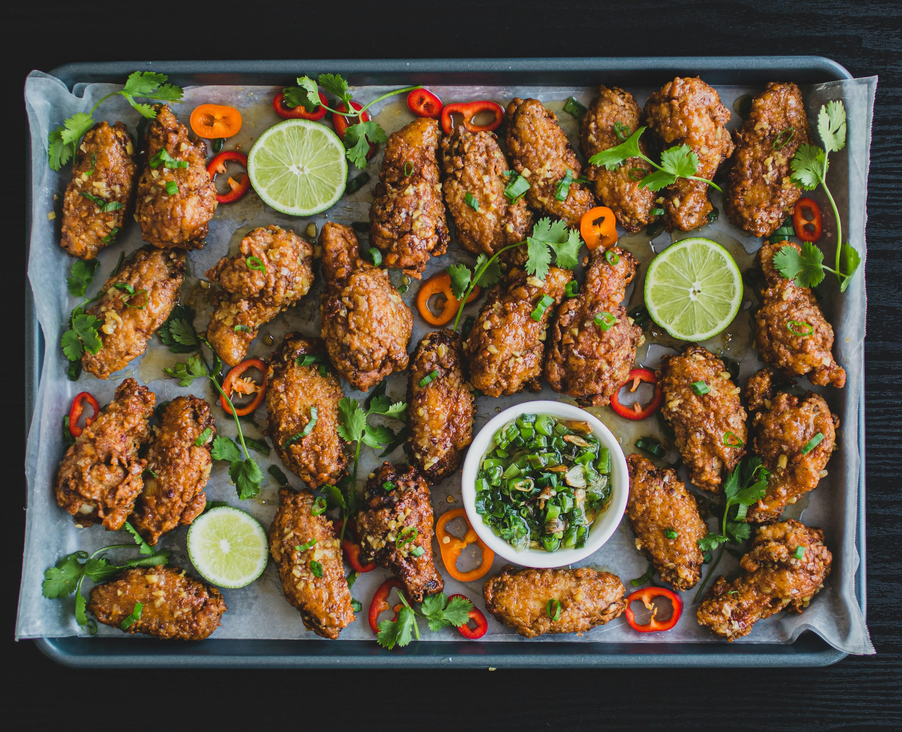

Lemon Pepper Wings Recipe: A Zesty, Crispy Delight

There's something so irresistible about lemon pepper wings. They’re the perfect combination of tangy, savory, and crispy. For me, they’re a celebration food—whether it’s game night, a family gathering, or just a treat-yourself kind of evening. The first time I made these, I was chasing the flavors of a famous wing chain, and now this recipe has become a household favorite. Let’s dive into how you can whip up these crowd-pleasers right at home!
Start by patting the chicken wings dry with paper towels. This is key to getting them crispy!
In a large bowl, toss the wings with baking powder, garlic powder, onion powder, salt, and black pepper. The baking powder helps create that magical crunch when baked.
Bake or Air-Fry for Crispy Goodness
Preheat your oven to 425°F (220°C).
Line a baking sheet with foil and place a wire rack on top. Arrange the wings in a single layer on the rack (this allows air to circulate).
Bake for 20 minutes, then flip the wings and bake for another 20-25 minutes until golden and crispy.
Add the lemon pepper sauce
While the wings are cooking, prepare the sauce. In a small saucepan, melt the butter over low heat. Stir in the lemon zest, lemon juice, cracked black pepper, garlic powder, and salt. Cook for 1-2 minutes to combine the flavors.Once the wings are done, transfer them to a large bowl. Pour the lemon pepper sauce over the wings and toss until evenly coated.
For extra flair, garnish with chopped parsley and serve with lemon wedges on the side.
What I adore about lemon pepper wings is how they pack so much flavor with just a handful of ingredients. They’re bold and bright, yet somehow comforting. Whether you’re snacking with friends or serving them as part of a big spread, these wings never fail to impress.
So go ahead, make these lemon pepper wings and watch them disappear as fast as you can plate them. And don’t forget to save a few for yourself—they’re too good to miss!